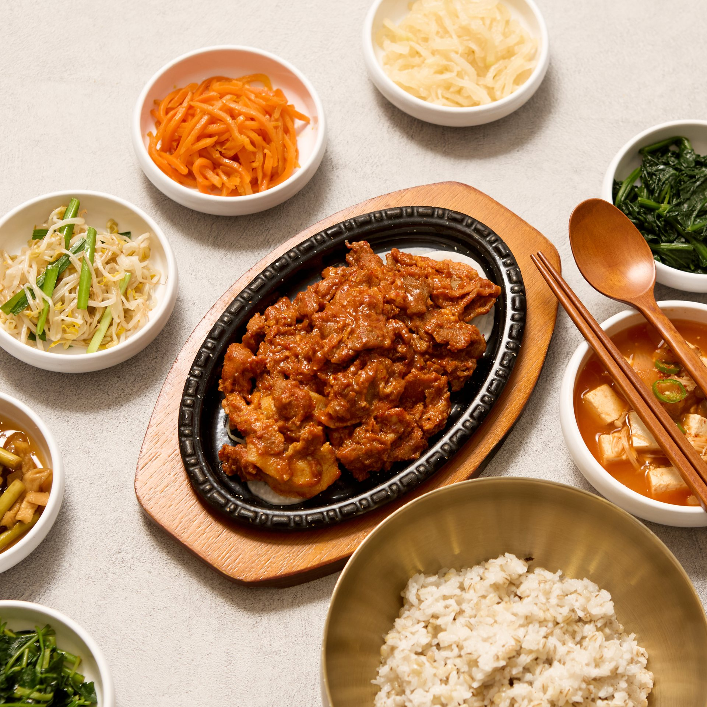
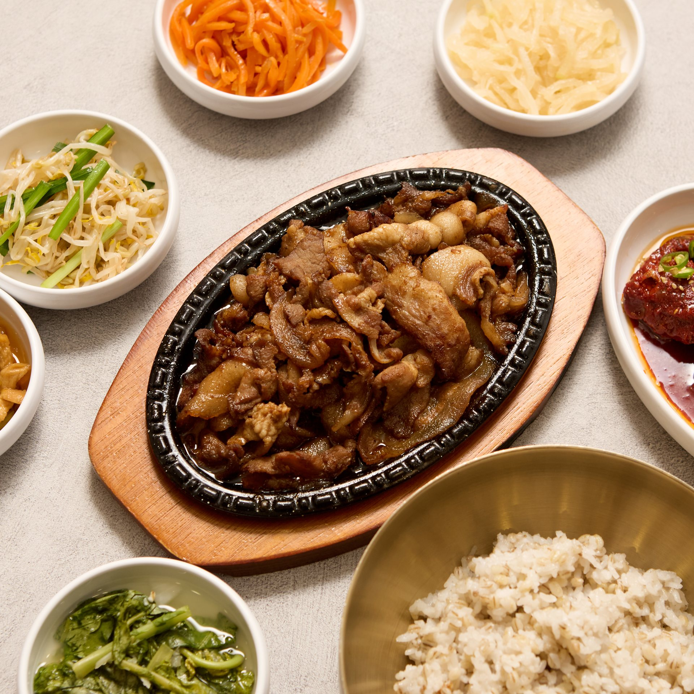
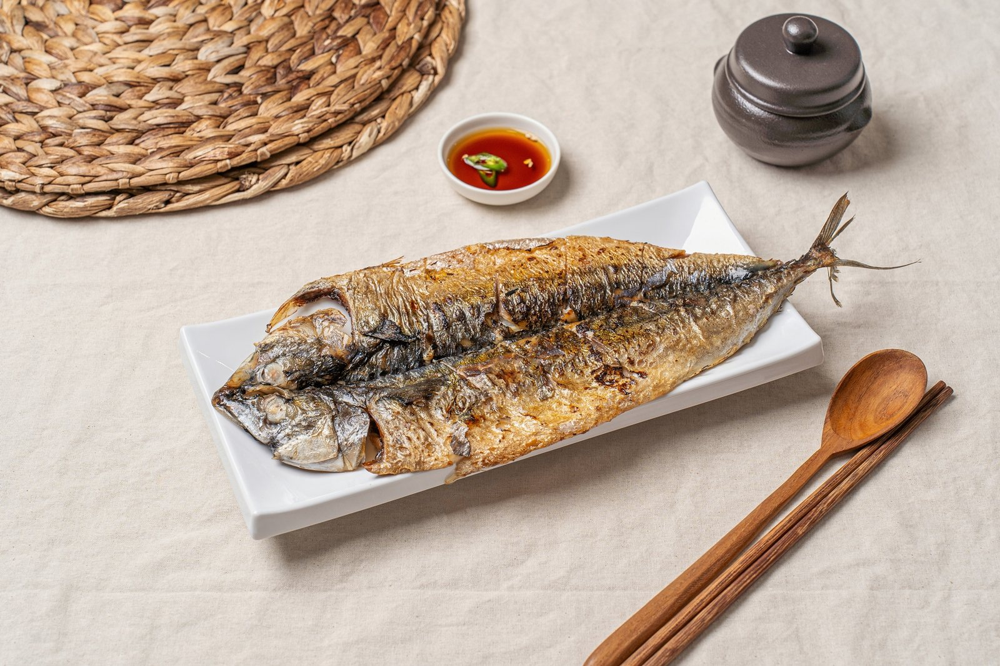
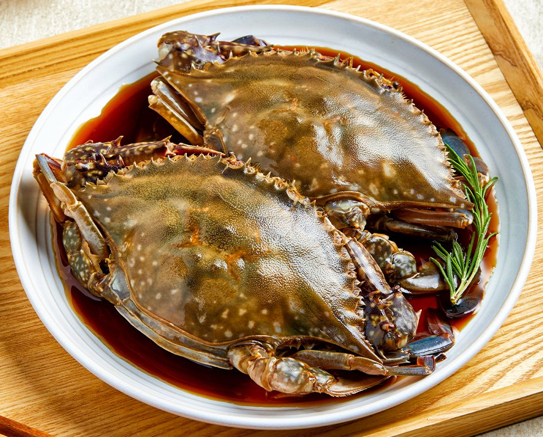
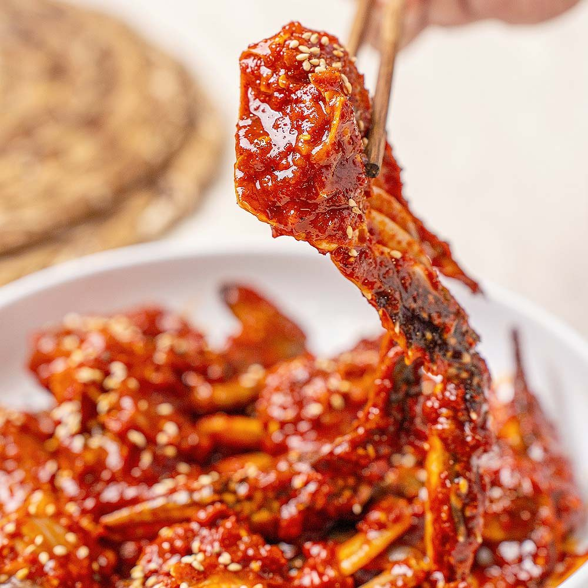
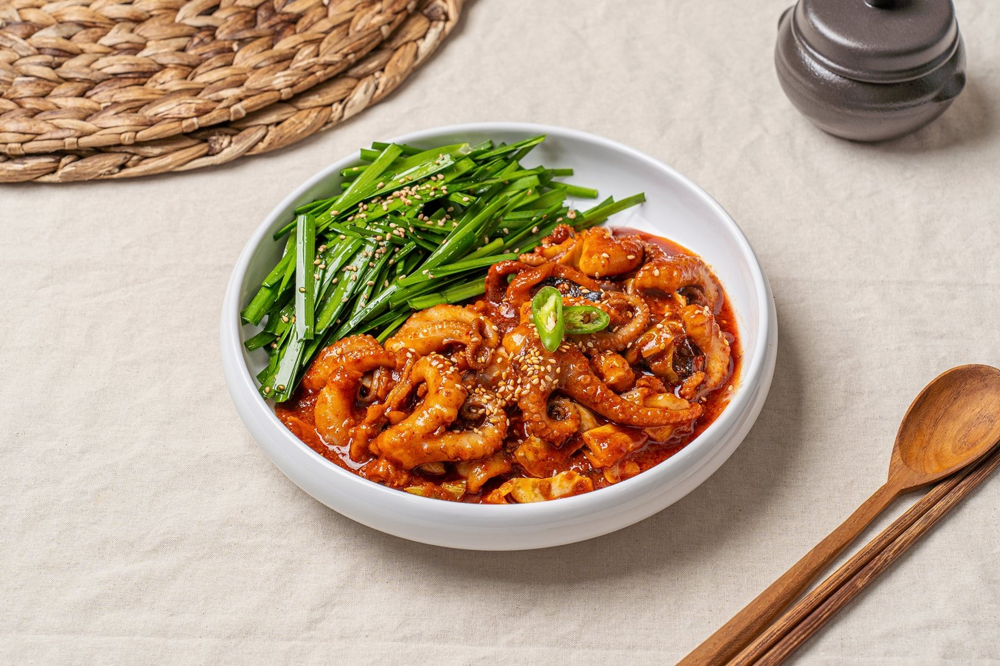
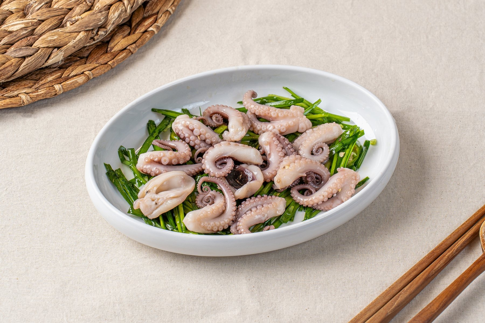
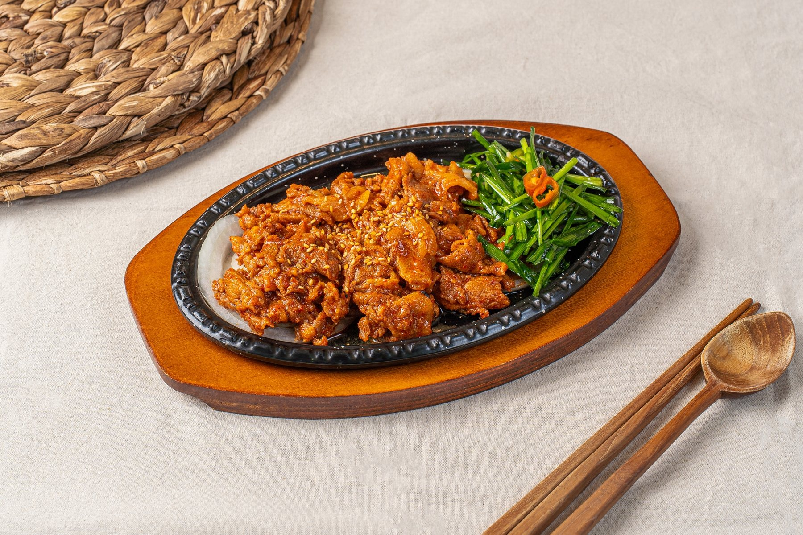

갓 지은 보리밥과 당일 손질한 8종 제철 나물이 모든 정식에 기본으로 풍성하게 차려집니다.

불향 가득한 직화제육에 명품 게장과 8종 나물이 함께 오르는 대표 상차림

불향 입힌 감칠맛 깊은 돼지불고기

엄선한 삼겹살을 정성껏 삶아내어 잡내 없이 야들야들하고 담백한 수육

매콤달콤한 비법 양념에 쫄깃한 식감과 강렬한 불맛을 입힌 직화 주꾸미

튼실한 고등어를 고온에서 구워내 겉은 바삭하고 속은 촉촉한 구이

알이 꽉 찬 암꽃게를 비법 간장으로 달여내 깊고 정갈한 맛

입맛을 돋우는 특제 양념으로 버무려 중독성 강한 밥도둑

매콤하게 볶아내어 쫄깃한 식감과 강렬한 불향이 가득한 별미

야들야들한 주꾸미를 향긋한 채소와 고소한 들기름으로 버무린 별미
고온의 직화로 구워내 겉은 바삭하고 속은 촉촉한 밥반찬

입안 가득 고소함과 부드러운 육즙이 퍼지는 별미
HOW TO EAT
따뜻한 보리밥 위에 게살을 올립니다.
게딱지에 밥을 넣고 장과 함께 비빕니다.
참기름 한 방울로 고소하게 마무리합니다.
제철 나물을 보리밥 위에 골고루 올립니다.
고추장과 참기름을 기호껏 더합니다.
슥슥 비벼 크게 한 술 뜨면 됩니다.
ONLINE